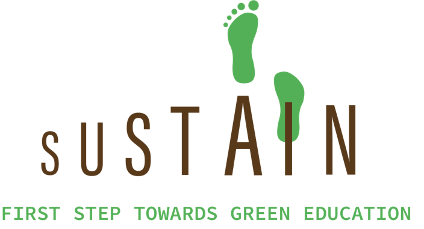

Business Case Studies

Business Analysis to Predict Property Risk in Buffalo
Categorizes investment properties as high, medium, or low risk based on factors such as mortgage status and property values.

sustAIn: Business Case Study
Developed an end-to-end business model for a new idea, "sustAIn," which focuses on green education and green commerce.